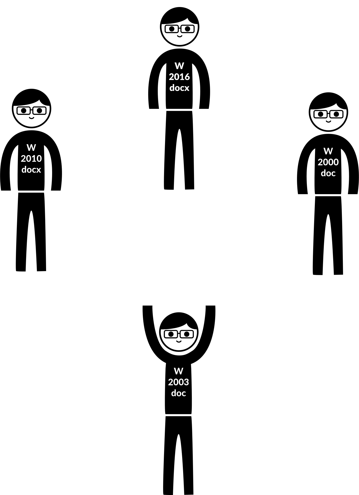
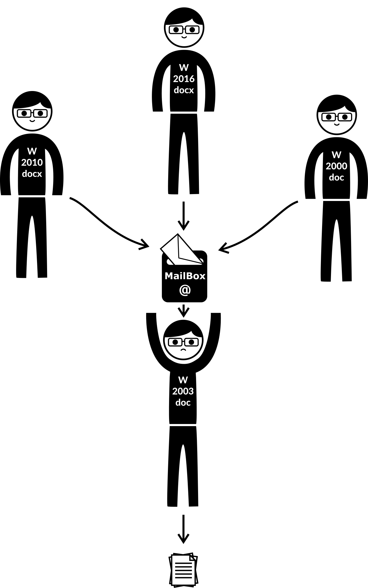

TeHI
Hypertext Format for Scientific Writers
история создания
История Legacy

История Legacy
История Legacy

История Legacy
История Legacy
Разные требования к оформлению
Как решили проблему в мире
WYSIWYG vs прямая разметка содержимого
Больше примеров
Решение
), автор занят только содержимым и его разметкой (содержимое отделено от представления)">
Что нужно было сделать
Интерактивный документ?!
Поднимем гипертекст на новый уровень
В поисках развития мысли
Research 2.0+
Глобальная система связей
Уважение к читающему
Выбор вида комментариев
Пример
TeHI
То, что получилось реализовать за короткий промежуток времени (год назад):
пример
.